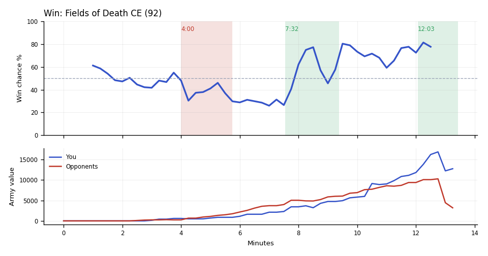

Win. Your Banelings and Ultralisks traded far better than their Marines and Tanks in the 12:45 fight.
Why
7:32–8:26: Scallop's Banshees killed 25 SCVs across three bases, dropping Skeetz's workers to their low.
12:00: Skeetz sat on about 2,500 unspent minerals (hidden from you), then lost most of their army in the final fight.
12:45–13:25: MrAlgorithm lost 52 Marines to Banelings, Ultralisks and Zerglings; Skeetz then typed gg.
Try next game
Scallop: When free supply drops under 8 with three or more production buildings running, start two Supply Depots at once. Check: never under 4 free supply 6:00–8:00.

Written by claude-sonnet-5-5 from the replay fact sheet.
What moved the win chance: army +11%, tech -2%, spending -2%
Across the whole game
Scallop had 3,633 unspent at 9:15.
Enemy Banshees (they made 7) destroyed 3,475 of your value (9 Hydralisks, 7 Drones, 5 Zerglings). Counters built after they first struck at 5:49: Scallop made 25 Missile Turrets; TakeTheTip made 18 Hydralisks, 11 Spore Crawlers.
TakeTheTip had 2,496 unspent at 9:15.
TakeTheTip lost 16 Hydralisks (2,400) over the game, mostly to Banshees (9), Battlecruisers (4).
Skeetz's Armory finished at 7:01; Scallop's at 10:50.
Compared with your other games
Scallop had been supply blocked for 71s by 8:00; in your wins usually 36s. Across your earlier games, when it was like this you won 21% (39 games) vs 52% otherwise (149 games).
Scallop was banking 606 at 4:00; in your wins usually 359. Across your earlier games, when it was like this you won 37% (35 games) vs 48% otherwise (191 games).
Engine debrief-v3-0.5. Losses count only units killed by an enemy. Win chance comes from a model trained on your earlier games.
Earlier replay bookmarks
Earlier moments to revisit, considering both teammates. Each row groups nearby losses. Engine and chart windows may include other simultaneous losses. Values are minerals + gas. These bookmarks do not grade the decisions.
Local losses: Scallop lost 2 Banshees (500); opponents lost 25 SCVs, 1 Siege Tank, +3 others (1,675)
Other recorded losses in this window: TakeTheTip lost 1 Hydralisk Den, 1 Queen, +2 others (425); opponents lost 1 Banshee (250)
Local losses: Scallop lost 3 Missile Turrets, 2 SCVs (400); TakeTheTip lost 8 Hydralisks, 3 Banelings, +7 others (2,100); duo total 2,500; opponents lost 1 Banshee (250)
Other recorded losses in this window: Scallop lost 2 Banshees (500); opponents lost 1 Siege Tank, 4 SCVs (475)
Local losses: Duo lost 0; opponents lost 8 SCVs (400)
Replay map
◎ Historical player start · ◇ Resource cluster · ■ Completed grounded hall · □ Unfinished hall · ✕ Recorded hall ending Dashed rings show recorded events during the selected interval, not simultaneous live state. Symbols and player labels accompany colors.
Hall state
Unplaced halls
Recorded events and source evidenceExact map, registration and resource-site sources
Positive resource-site occupancy is recorded hall presence. Mining, vision, routes, local army availability and map control are unknown. The MMR-conditioned model estimate is unchanged. This panel cannot establish what caused a probability drop.
Older V2 evidence cards
Evidence-first cards are generated independently from the predictive model. Each card separates replay evidence, interpretation, past-only comparison, and an adjustment to test.
Abstained
No supported V2 insight
No supported window
Interpretation
No deterministic temporal pattern met the evidence and persistence checks for an actionable card.
Adjustment to test
No adjustment supported.
Confidence: AbstainedVisibility: replay_state
Evidence chain and comparison
Evidence
No qualifying factual evidence was retained.
Past-only comparison
No past-only comparison was used because no qualifying pattern was detected. Support: 0. Comparable replay IDs: None retained.
Provenance
No additional provenance was retained.
No qualifying deterministic V2 pattern was detected in the available replay evidence.
P(win) is an MMR-conditioned model estimate. Economy and Army Position compare the duo to historical positions at similar game times; they are not model-contribution lanes.
Raw State Comparisons
Observed tracker values, not race-normalized scores. Duo and opponent totals are shown alongside TakeTheTip and Scallop so the normalized lanes above can be checked against the underlying army, economy and bank quantities.
Observed Combat Outcomes
Positive bars favor the duo; negative bars favor the opponents. Each bar summarizes the preceding 15 seconds at a sampled boundary; selected-window summaries exclude future events. These observations do not prove the correct alternative decision.
Factual Replay Timeline
These milestones are replay facts synchronized to the selected window. They are context, not claims about what caused the result.